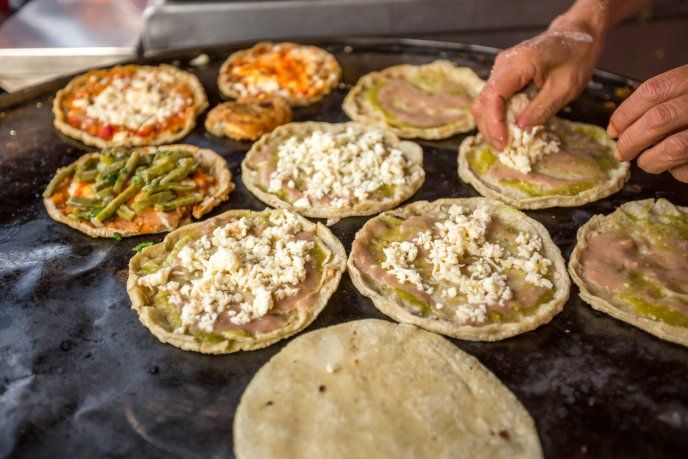
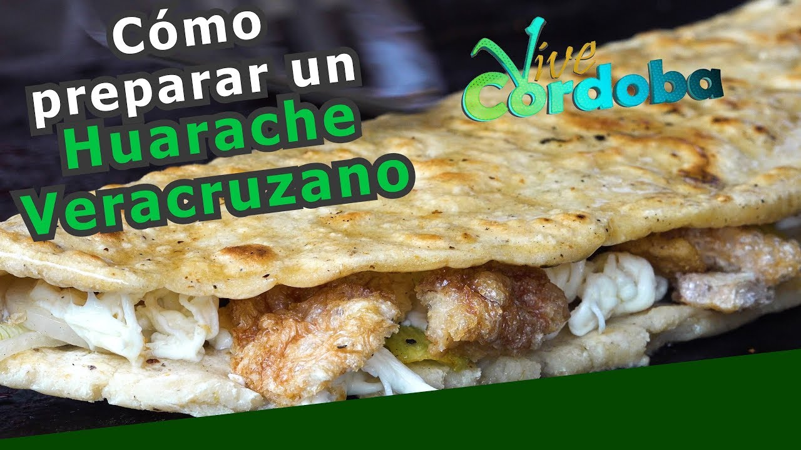

Datos de su gastronomia
La gastronomía de Veracruz es muy variada debido principalmente a su extensión territorial, ya que, dependiendo de en qué región te encuentres, encontrarás una comida u otra. Pero aquí van algunos datos interesantes con respecto a la gastronomía:
- Se utiliza de manera importante los productos del mar para componer la dieta como el pescado a la veracruzana, el chilpachole de jaiba y la gran variedad de mezclas llamadas "cokteles", como los de camarón, jaiba, ostión y pulpo. Aunado a los mariscos, la tierra y el clima permite también la producción de maíz y frijol.
- En la región del centro que es de donde vengo son comunes los chileatoles, el cual básicamente es un atole de maíz salado el cual es condimentado con chile y espesado con masa de maíz. También los famosos chiles xalapeños, rellenos o en vinagre. Así mismo también se pueden encontrar tamales de harina y de pescado el cual viene envuelto en hoja y condimentado con hierbas de olor.
-
Antojitos. En este apartado se hará una tabla para mostrar los principales (o más bien mis favoritos) antojitos
que puedes encontrar en Veracruz.
Antojitos Nombre ¿Qué es? ¿Cómo es? Picaditas Las picadas son de masa de maíz, que una vez aplanadas, las orillas se pellizcan para crear un ligero borde para que la salsa no escurra, es de ahí que toma el nombre de ‘picadas jarochas’. Una vez que está hecha la forma, se coloca sobre un comal para su cocción, a diferencia de los sopes que se fríen en aceite.
Lo sabroso llega cuando se les pone la salsa, que, si bien puede ser cualquier tipo de salsa, usualmente, y lo más tradicional es que sea salsa roja (la cual realmente no pica, sino que es jitomate y cebolla molida) o salsa verde (la cual sí pica).
Adicionalmente, se les pone encima de la salsa, cebolla y queso jarocho. Algunas personas que venden estos antojitos tienen la costumbre de ponerle más cosas, ya sea que encima le pongan frijoles, chicharron, carnitas, etc.
Su precio en donde yo lo compro es de $5 cada picadita Empanadas Las empanadas igualmente son de masa. Según lo que he visto lo primero que hacen es darle la forma a la masa de una empanada abierta, posteriormente teniendo la "tortilla" (la empanada pero extendida o abierta) le ponen el ingrediente que se pide.
Las empanadas veracruzanas usualmente son ofrecidas de picadillo, de pollo (el cual va acompañado de jitomate), o de queso, aunque también hay personas que ofrecen otros sabores como choriqueso o champiqueso. En mi caso las empanadas que prefiero usualmente son las de picadillo o las de pollo.
Una vez que la empanada ya tiene el ingrediente, se cierra y se mete en aceite un ratito. Al salir del aceite ya están prácticamente listas, solo se le agrega crema, queso, salsa y lechuga al gusto.
Su precio en donde yo lo compro es de $8 cada empanadaHuaraches Los huaraches son como una empanada enorme, pero en vez de llevar ingredientes como picadillo o pollo que es lo usual en las empanadas, el huarache lleva flor de calabaza, muchisimo queso adentro, epazote, chile y más cosas. No recuerdo específicamente cómo se hacía el huarache pero encontré un video en YouTube de cómo los hace una señora que precisamente es de donde yo vengo. Aunque sí se hacen así, tengo que decir que los que yo he comprado, o al menos a la señora a la que siempre le compro, los hace mucho más grande que el del video.
Su precio donde yo los compro es de $30 cada huarache
 Plátanos fritos Los plátanos fritos literalmente son platanos que se meten en aceite, los plátanos deben ser plátanos machos ya que si es un plátano rotán, el plátano se va como a derretir. Literalmente el plátano lo cortan a conveniencia y lo meten en aceite, ya que está frito, se le puede poner lechera, crema, chispas de colores, de chocolate, cajeta, etc.
Su precio donde yo los compro es de $20 cada plátano frito